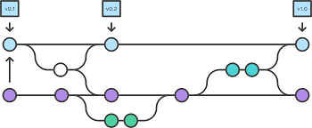

<mat-card class="card workflow">
  <mat-card-content class="description">
    
    <span class="pad-left">Code documentation</span>
  </mat-card-content>
  <mat-card-content class="description">
    
    <span class="pad-left">Test coverage</span>
  </mat-card-content>
  <mat-card-content class="description">
    
    <span class="pad-left">CI/CD Integration</span>
  </mat-card-content>
  <mat-card-content class="description">
    
    <span class="pad-left">Gitflow WorkFlow</span>
  </mat-card-content>
</mat-card>
